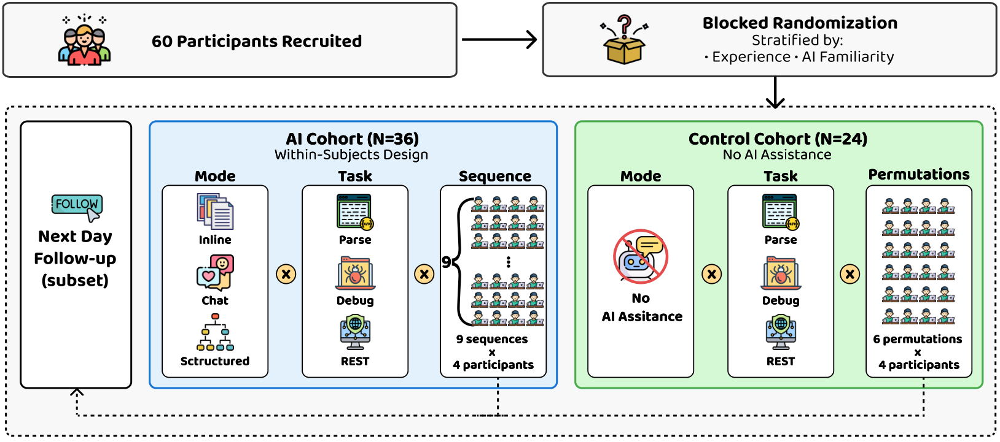
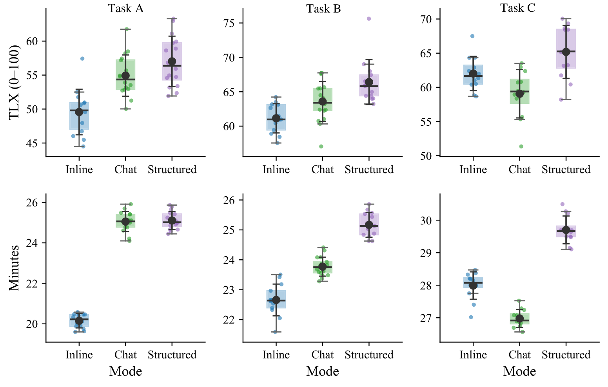
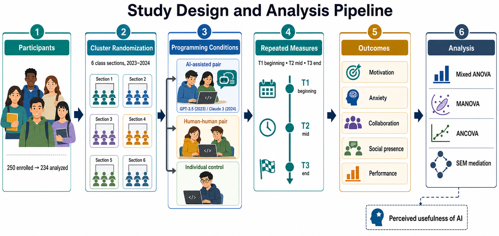
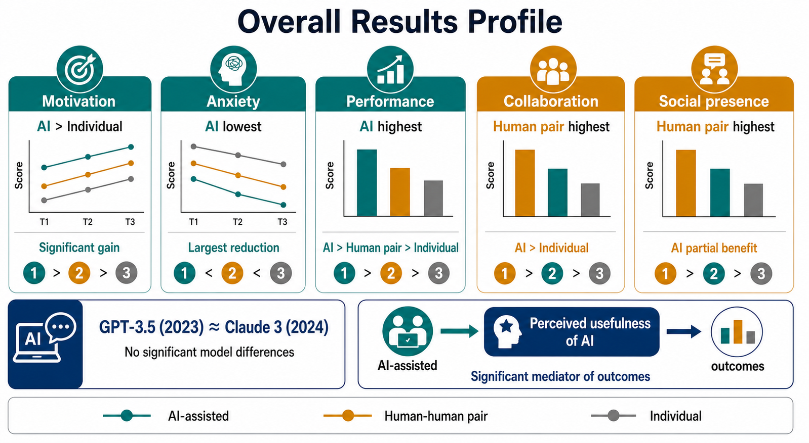

Paper Detail
论文详解 · 方向二
14 May 2026
Direction II
AI-Assisted Programming Education
方向二 · 代表性论文


Paper 03 / Direction II
验证负担
When Help Hurts: Verification Load and Fatigue with AI Coding Assistants
★
Fan, G.
·
CHI 2026
CCF-A
★ HM
Concept
概念
提出
Verification Load
— 失败 · 返工 · 上下文切换
Comparison
比较
Inline · Chat ·
Structured
三类交互模式对照
Finding
发现
AI 帮助
不等于
自动减负 — Structured 模式显著减压


Paper 04 / Direction II
AI 结对编程
The Impact of AI-Assisted Pair Programming on Motivation, Anxiety & Performance
★
Fan, G.
·
Int'l J. of STEM Education
SCI Q1 Top
★ ESI
Problem
问题
AI 成为结对编程的另一方时, 学生四维度如何变化?
Method
方法
本科生课堂对照实验 + 多周期跟踪 + 心理量表
Finding
发现
动机
↑
· 焦虑
↓
· 协作
↑
· ESI 高被引
樊光瑞
· gerryfan0706.github.io
10
/ 17